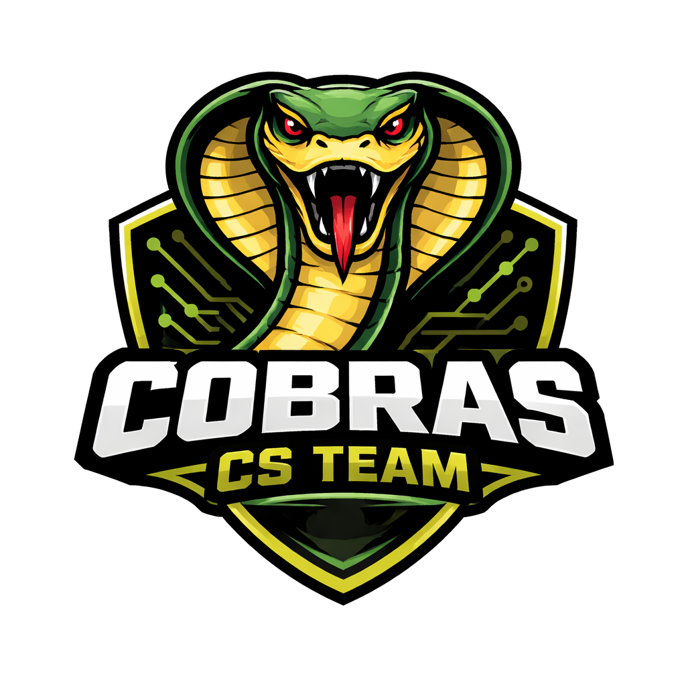

Title
Put bio here
Software Developer
Cooper is a Student at UNC Charlotte persuing Computer Science. He is interested in Software Development and Video Game devlopment
Cyber Specialist
Will is a cybersecurity major interested in cloud security and cloud engineering.
Software Developer
Zaheir is a Sophomore at UNCC, concentrating in Cybersecurity. He is interested in Anime and Physical exercise.
Scrum Master/Website Designer
Nate is a junior majoring in Cybersecurity who loves drawing and hiking. Some of his favorite CS tools and resources include: